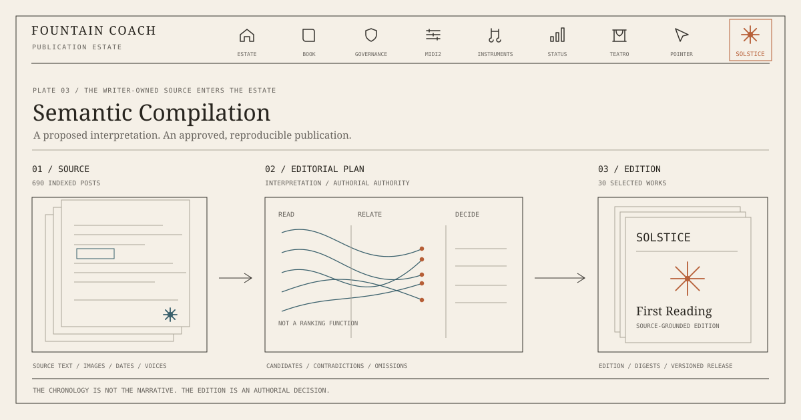

Semantic Compilation — The Archive Is Not the Edition
A writing archive is evidence. An edition is a decision. Between them lies the work of semantic compilation.

A date is a precise thing, but it is not yet a beginning. Solstice begins on 21 December 2025, the day of the winter solstice. The name gives the work a threshold: after the longest night, the day changes direction. None of this tells us which sentence belongs next. An archive can establish when a text was written; it cannot tell us why another text, written months later, should answer it.
The Solstice archive contains writing, images, journals, Memory Vectors, Teatro Scores, fragments of scenes, and versions of things that have not settled into names. The first imported index describes 690 posts across 267 dates. The first published reading comprises thirty complete texts with forty-one accompanying images. These are real works, and they have been preserved as works rather than reduced to social-media snippets. But a simple question immediately follows publication: why these thirty?
The first selection places three pieces in each of ten months. That gives the reader an even passage through time. It also gives February, with its many alternatives, the same three places as September. The publication machinery can identify the original source text, preserve its wording, attach the original images, and produce an address for every page. It cannot deduce from those facts alone that one work is necessary and another dispensable. The chronology is reliable. The literary argument remains to be made.
What it would mean to compile meaning
A conventional compiler transforms source code into something a machine can execute. It does not merely copy the source into a prettier format. It parses structures, resolves names and dependencies, tests constraints, and turns a declared arrangement into an artifact with defined behavior. A compiler can reject an invalid construction. It can also tell us where the construction came from.
The analogy is useful for writing, provided we do not carry it too far. There is no type checker capable of deciding the meaning of an absent father, a red room, a pair of scissors, or a line written in anger. A novel is not the one correct executable form of its notes. The same archive can sustain several incompatible but defensible books. The compilation is semantic because it operates on proposed relationships among works; it remains authored because choosing among those proposals is a decision, not a calculation disguised as one.
Consider an image of a room. In one journal it is a memory of exclusion. In a Teatro Score it becomes a stage boundary. In another voice it becomes somewhere that a person might enter, or refuse to enter. Chronological indexing sees three dates. Semantic indexing may recognize a recurring place and a changing function. Semantic reasoning proposes a relation: perhaps the room has stopped being remembered and has begun to act. Semantic compilation takes responsibility for the consequence. Put the three appearances together? Place the stage first and let the childhood room arrive later? Withhold one entirely? The structure changes the work.
This is not a search result. It is not a summary. And it is not the model silently making literature on the writer’s behalf. It is a proposal to make a form, with the grounds for that proposal still visible.
The source must survive the interpretation
The technical story begins with separation. The imported Facebook export is a source, not a public publication queue. Its original text, source identifiers, dates and image references can be retained privately. A normalized index makes individual items addressable; stable digests allow an edition to say which exact text or image it used. A published edition contains only what has been admitted. Private photographs, metadata, rejected material and preliminary versions do not become public merely because the compiler could read them.
This separation is already more substantial than a change of typography. Solstice has a writer-owned source domain and an edition with individually navigable pages. Its publisher can reconstruct a selected page from a recorded source identifier, render the text without rewriting its vocabulary, and verify the assets in the resulting release. The material is traceable. Yet the selection was entered as a finite list of source identifiers and titles. The record answers which and from where, not why this rather than that. It is a useful first demonstration of the gap.
A semantic compilation therefore needs another artifact between the archive and the published page: an editorial plan. Not an opaque ranking score, and not an instruction to publish everything classified as “literary.” The plan records hypotheses: which voices speak, which objects recur, which contradictions remain active, where one scene alters another, and what an omission makes possible. An inclusion needs a relation to the proposed whole; an exclusion needs at least a knowable boundary. The plan must allow a writer to disagree, reorder, replace, or decline to publish.
A source passage may be linked to several hypotheses. A hypothesis may yield competing sequences. A sequence may become a reading edition, a staged scene, an illustrated essay, a screenplay, or a novel. These are not different skins over the same content. Each medium changes what a relation can do. A diagram can hold simultaneity; a stage gives it duration; prose may lend it a voice that was absent from the diagram. Each transformation needs its own provenance and its own authority.
An interpretable machine, not an automatic author
A practical compilation pipeline has two different kinds of work. Its exploratory part proposes relationships, contradictions, and alternate structures. That work may involve a frontier model, a local model, or both. It should be able to point back to source passages and images, to distinguish observation from interpretation, and to admit uncertainty. The model is allowed to suggest that a recurring red line functions as a boundary. It is not allowed to establish, as fact, what the author intended.
After the writer has accepted an editorial plan, a different discipline begins. The agreed sequence, text revisions, image roles, page addresses, permissions and publication boundaries form a versioned instruction. The renderer should not improvise new choices on the next run. A repeat compilation of the same accepted plan and source versions should produce the same material, with checks that detect missing images, shifted passages or unauthorized disclosure.
This distinction matters because speed is not the same as intelligence. A model that produces plausible prose in seconds can still destroy an editorial argument by explaining away its uncertainty. A perfectly deterministic publisher can still make a beautifully formatted but arbitrary anthology. Reframe needs the ability to explore possibilities without allowing exploration to become publication authority. The compiler should expose the decision, not conceal it beneath fluency.
One useful test would be to ask the system to produce two incompatible but source-grounded readings of the same material. One might move from private vigilance toward the architecture of theatre. Another might begin with the history of the Federal Republic and work backward through the family image. The author can inspect not only what each includes but what each silences. The compiler's work becomes visible in the difference between the two.
The rail is a map of responsibilities
The Fountain Coach estate already gives this distinction a public architectural form. Its top navigation is an estate rail, not simply a row of product buttons. Each destination carries a different question. The Book asks how behavior is described. Governance asks what is permitted and who decides. MIDI2 gives relations a machine-readable transport. Instruments provide bounded capabilities. Status offers an observable public account. Teatro gives memory and relations a stage. The Personal Pointer keeps the person who authors the estate findable. The essays interpret what the work might mean.
Solstice adds an essential question: where does the writing come from, and what may be made of it? It deserves an address and a mark of its own. An eight-point solstice mark with a central point joins the rail without pretending to be another instrument. It identifies an authored source domain whose texts may be read, compared, compiled, and eventually performed. Its archive remains distinct from a published reading; its editions remain distinct from the private archive. The sign opens a door; it does not collapse the rooms behind it.
That is why integration into the estate must be semantic as well as visual. The logo is not decoration attached to a new subdomain. The rail recognizes Solstice as a domain with a specific responsibility. Its navigation should take a reader to a real, accessible publication; its presence across the estate should be coherent; and its link should move to the permanent hostname only when that hostname is actually reachable. An address is part of an editorial promise.
The edition is an argument, not a harvest
A book made from the Solstice material may begin on 21 December. It need not proceed through January, February, March. The compelling sequence could put a late rehearsal beside the earliest image of watchfulness. It could allow N. to contradict Bee before Bee has introduced herself. It could keep a photograph where words would become too clever. It could remove an accomplished essay because it resolves what the book needs to leave open.
These are not errors of ordering. They are the work of composition. The archive is evidence that something happened in writing. The edition asks what happens when the evidence is placed in a new relation. A semantic compiler should help a writer see those relations, test their consequences, and preserve their origin. It must also permit the simplest editorial decision: no. Not this text. Not here. Not yet.
The first Solstice reading can remain what it is: a carefully traceable first publication, an opening rather than a verdict. Its next reading need not be larger. It must be more deliberate. The aim is not to turn 690 posts into thirty representative samples, and not to automate the discovery of a supposedly hidden masterpiece. It is to give the writer an instrument through which the archive can become an authored work without ceasing to be an archive.
The winter solstice is a date. An edition is a choice. Semantic compilation is the practice of making that choice legible, revisable, and repeatable—while leaving the final responsibility where literature has always placed it: with the person who signs the work.
Enter the Solstice writing source → · Read the first edition →